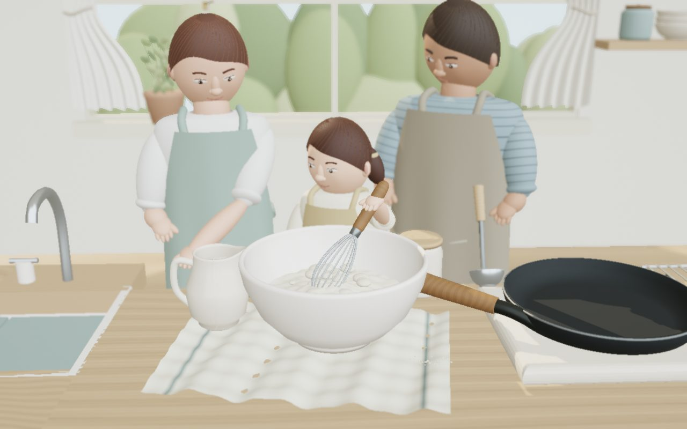
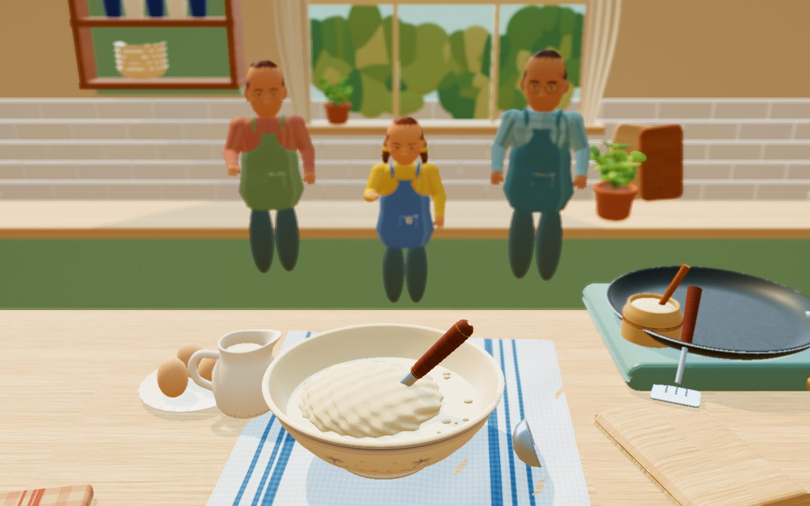

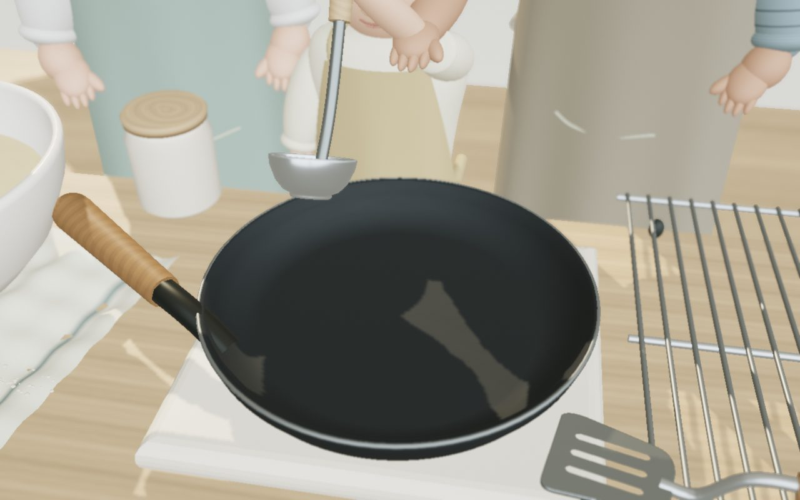
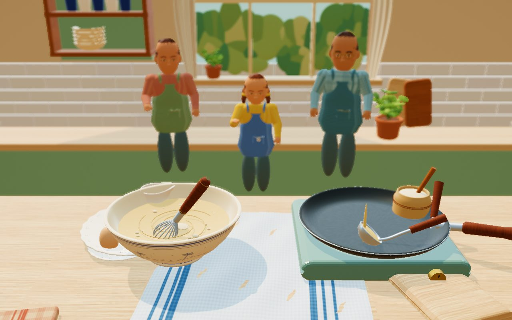
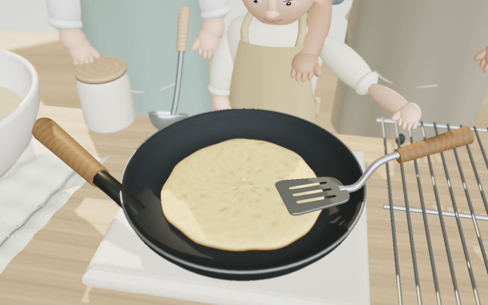
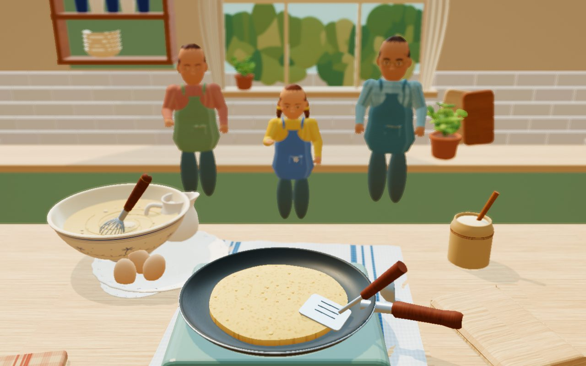
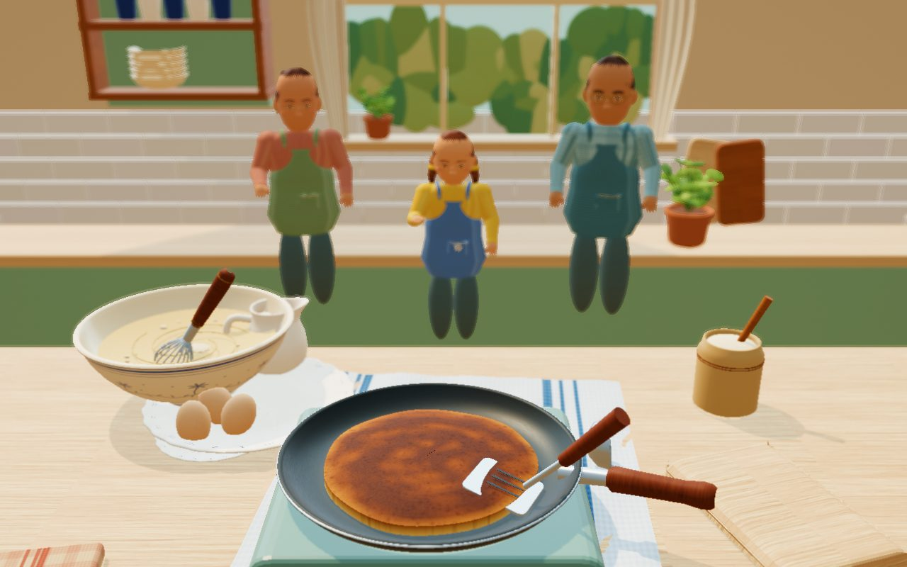
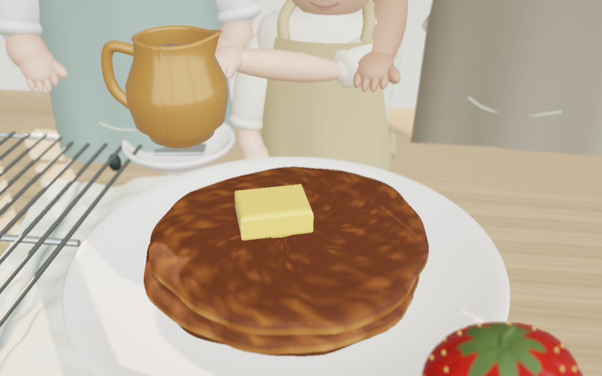
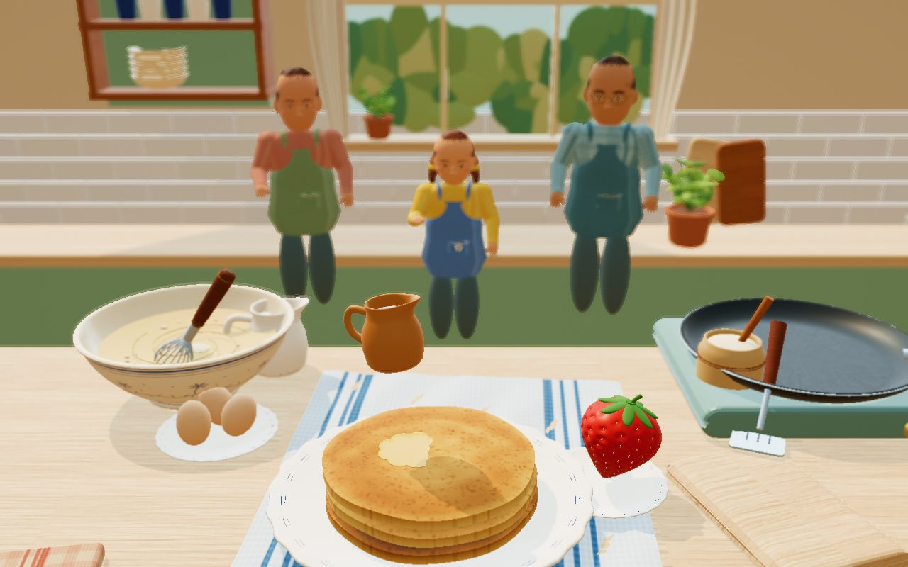
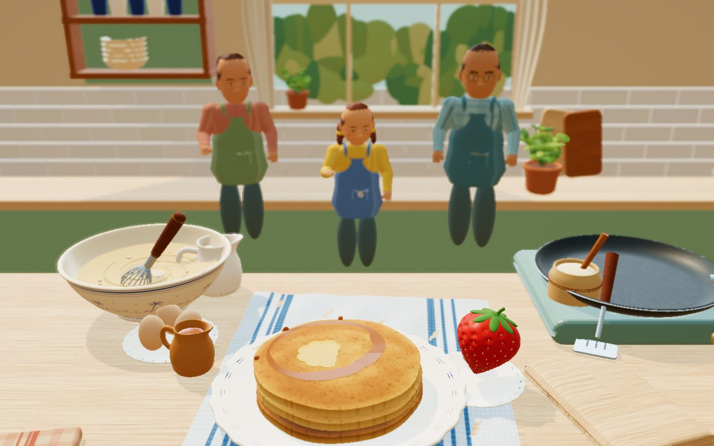

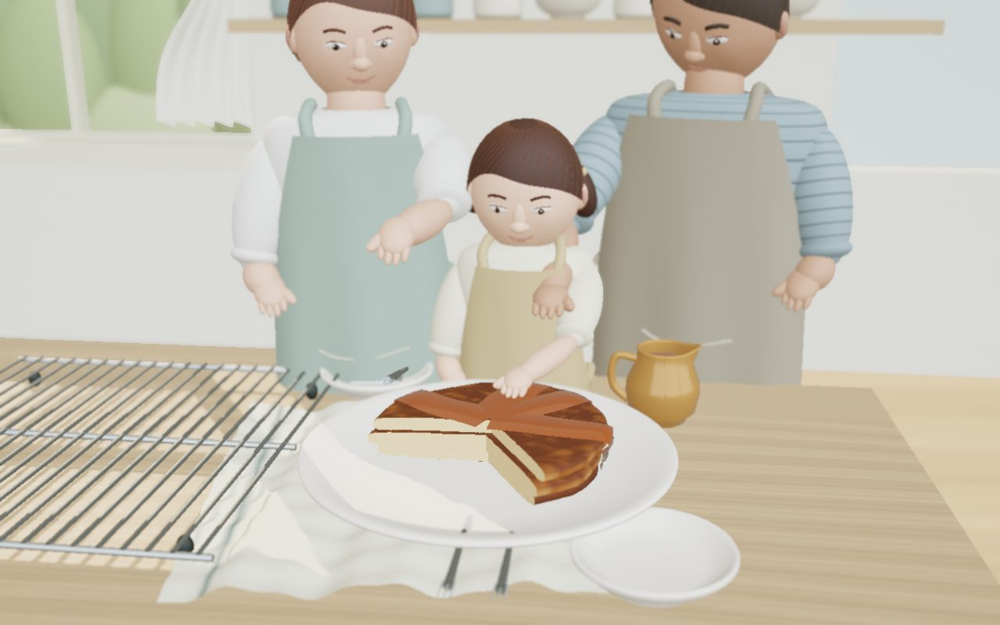
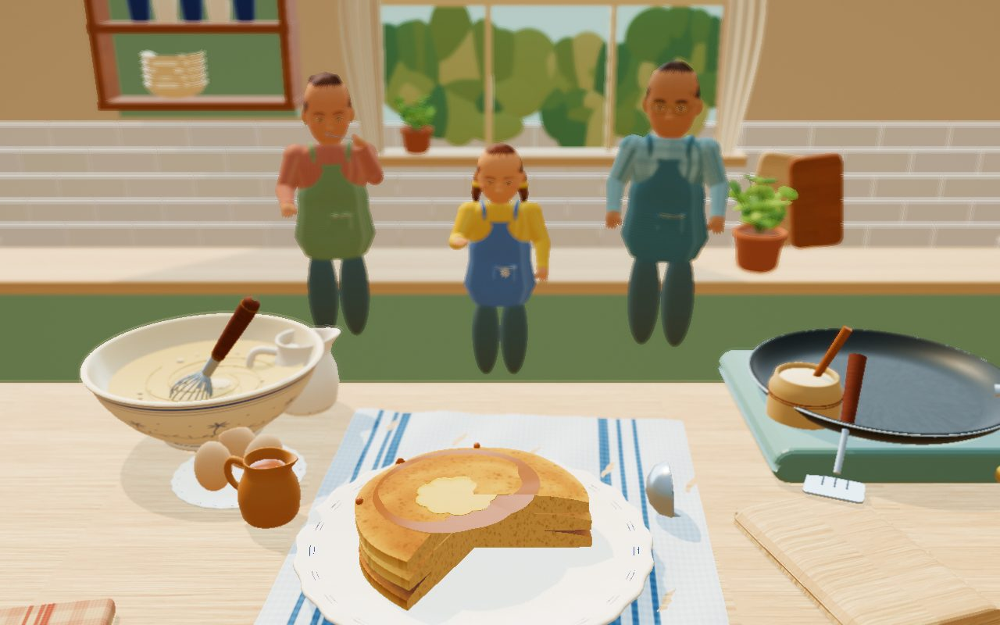
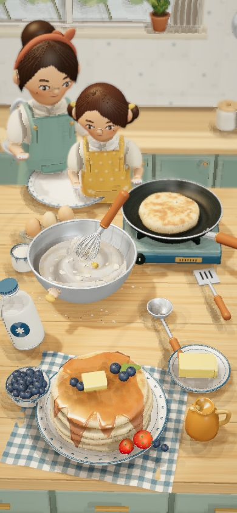
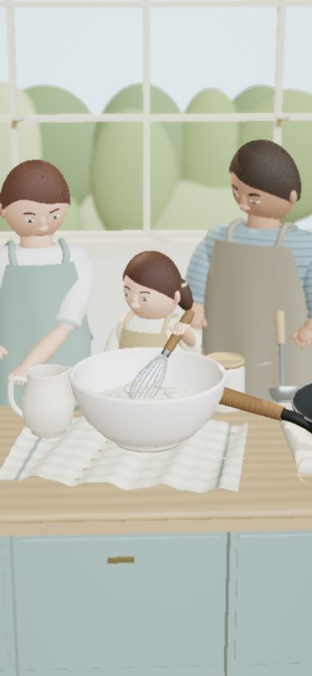
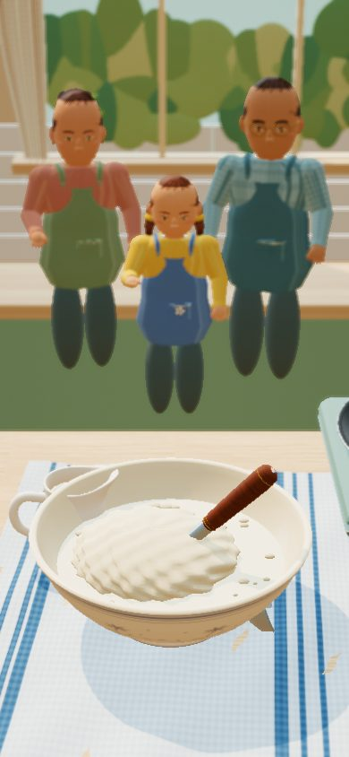
| A | B | C | |
|---|---|---|---|
| 指示文の字数 | 18,387 | 1,176 | 1,625 |
| 彩度中央値(HSV 0-100, 全スクショ) | 28.6 | 11.4 (7〜19) | 24.3 (22〜26) |
| 人物がフレームで切れる | 上半身で自然 | あり | なし(全身が入る) |
| 焼き色 薄い黄金→濃い茶 | 未計測 | 4秒で29%、10秒で71%(速すぎ) | 7.9秒→14.7秒(4秒では0.6%) |